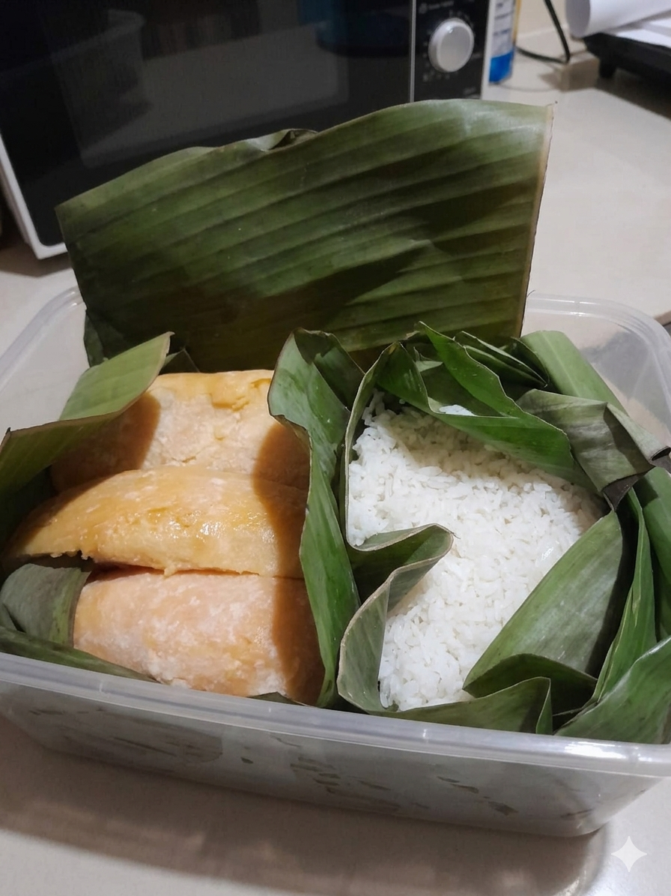

Tape adalah makanan fermentasi tradisional Indonesia yang dibuat dari nasi putih atau ubi. Proses fermentasi menggunakan ragi untuk mengubah karbohidrat menjadi gula sehingga menghasilkan rasa manis dan tekstur yang lembut.

Penelitian ini membahas proses fermentasi pada pembuatan tape dari nasi putih dan ubi Cilembu. Proses fermentasi dilakukan dengan memperhatikan kebersihan, waktu fermentasi, dan kondisi penyimpanan agar menghasilkan tape berkualitas baik.